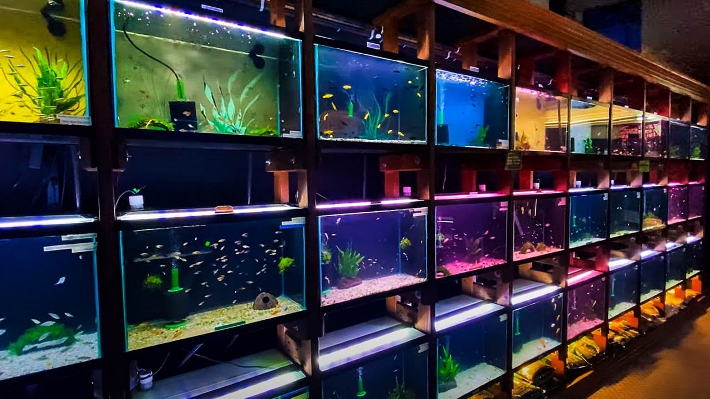

Get to know more about us!
Welcome to Kotoko Family Aquarium, established in 2007, catering exclusively to young members and adults in the family of fish lovers
who share passions for vibrant aquatic life. Nestled in the middle of Kuala Lumpur, our
store is the realization of a dream by aquatic enthusiasts dedicated to creating a welcoming haven for
like-minded individuals. Our store specializes in coral reef fishes and our knowledgeable staffs are here to assist hobbyists on all
levels of budgets to suit their preferences. Immerse yourself in our extensive variety of coral reef fishes, reflecting the
beauty of the aquatic world at Kotoko Family Aquarium.